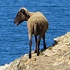

|
P'tit angné, tchi qui t'griyit? Sai-tu tchi qui t'griyit, tchi t'fit vivre et t'a souongni par l'canné et dans l'côti; tchi si bouonnement t'habilyit d'un doux habit d'laine tchi lit; tchi t'baillit eune si douoche vouaix tchi remplyit touos les vaux d'jouaie? P'tit angné, tchi qui t'griyit? Sai-tu tchi qui t'griyit? P'tit angné, mé j'té l'dis: P'tit angné, mé j'té l'dis: par tan nom il est app'lé, car i' s'appelle un angné. Il est doux et il est mo, i' vînt siez nous coumme un p'tchiot. Mé, un p'tchiot, et té, l'angné, j'sommes, nous, par san nom app'lés. P'tit angné, sai béni! P'tit angné, sai béni! William Blake Vèrsion Jèrriaise Geraint Jennings 2014 |
|  |  |
 |
Viyiz étout: